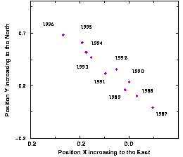

Double Star CatalogIt's a pair of stars in orbit around a common centre of gravity under their mutual gravitational attraction. The individual stars in the system are called components: component A is the primary or the brightest and component B is the secondary or the faintest (in general). There are several types of binaries according to the techique of detection used. Visual Double StarsThe two components can be resolved visually through a telescope. Such systems have mostly been investigated for astrometric purposes: highly accurate measurements of the position of the star on the celestial sphere are obtained in order to gain knowledge of the orbit characteristics as well as visual estimates of the difference of magnitude (measure of the brightness) between the two components. In more recent times, observers used photometric techniques to get high precision measurements of the global magnitude and colours of these systems. Astrometric Double Star
 These are apparently single stars. In this case the binarity is revealed by perturbations of the position with respect to the "background" or "reference stars". These systems are studied by photographic means: measurements
show the motion of the photocentre (this is the weighted centre of the light intensity of the two components). From such a study we can obtain e.g. the luminosity, the semi-major axis of the astrometric orbit, the position
of the center of mass of the system.
Spectroscopic Double StarsSystems where the components are too close to each other to be resolved as separate stars, are studied by spectroscopy (study of the stellar atmospheres, radial velocity measurements via the Doppler effect).The study of their spectra shows periodic shifts due to the orbital motion around a mean velocity which is the motion in the radial direction of the system as a whole. We thus can obtain the spectroscopic orbit. It gives us the orbital period, information on the orbit itself such as the eccentricity and very useful, the mass ratio of the system. For example, the left figure illustrates the radial velocity curves for alpha Aurigae A and B. Eclipsing Double starsWhen the orbit is aligned with respect to Earth, one component may occult the other one. These "eclipses" are seen as periodic perturbations (drops) on the light curve (luminosity as a function of time, e.g. HIC 31173 see figure). These double stars are called eclipsing binaries. From the study of their light curves, we have access to the period, the inclination, the luminosity ratio and the radii of the stars.
|
|
{kind=link}